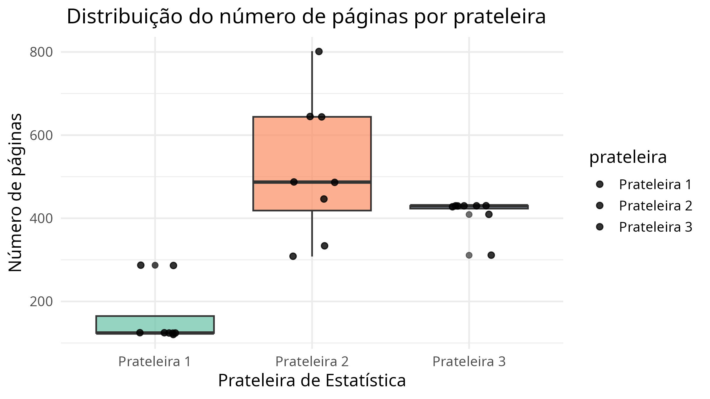
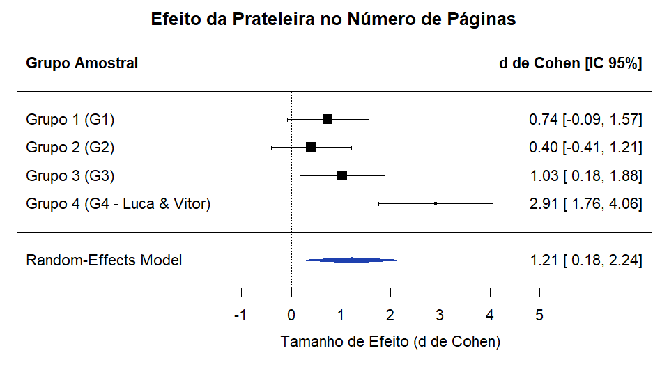

Aventura Estatística no Acervo da Biblioteca Omar Catunda
1. As 3 prateleiras de Estatística estão próximas ou separadas?
Resposta: As prateleiras estão separadas. Nenhuma na mesma estante.
2. Vocês reconhecem algum livro? (Bussab & Morettin, Montgomery, etc.)
Resposta: Reconhecemos o livro de elementos de amostragem do Bolfarine e o Bussab, além do livro Design and Analysis of Experiments do Montgomery da disciplina.
3. Qual prateleira parece ter os livros mais antigos?
Resposta: A Prateleira 2 tinha livros muito antigos, pareceu para nós que era a prateleira com livros mais antigos.
Descrição Física dos Tratamentos (Prateleiras):
| Ordem de Medição | Tratamento (Prateleira) | ID Livro | Posição Sorteada | Aluno Avaliador |
|---|---|---|---|---|
| 1 | Prateleira 3 | 1 | 2 | Vitor |
| 2 | Prateleira 1 | 6 | 8 | Luca |
| 3 | Prateleira 3 | 6 | 4 | Luca |
| 4 | Prateleira 2 | 2 | 8 | Vitor |
| 5 | Prateleira 2 | 1 | 4 | Luca |
| 6 | Prateleira 2 | 7 | 2 | Luca |
| 7 | Prateleira 1 | 4 | 8 | Luca |
| 8 | Prateleira 3 | 3 | 10 | Vitor |
| 9 | Prateleira 3 | 4 | 11 | Luca |
| 10 | Prateleira 1 | 2 | 12 | Luca |
| 11 | Prateleira 2 | 8 | 5 | Vitor |
| 12 | Prateleira 1 | 8 | 12 | Luca |
| 13 | Prateleira 3 | 8 | 4 | Luca |
| 14 | Prateleira 2 | 5 | 6 | Luca |
| 15 | Prateleira 2 | 3 | 1 | Luca |
| 16 | Prateleira 3 | 7 | 13 | Vitor |
| 17 | Prateleira 1 | 1 | 5 | Vitor |
| 18 | Prateleira 3 | 2 | 3 | Luca |
| 19 | Prateleira 2 | 6 | 4 | Vitor |
| 20 | Prateleira 2 | 4 | 14 | Vitor |
| 21 | Prateleira 3 | 5 | 10 | Vitor |
| 22 | Prateleira 1 | 7 | 6 | Vitor |
| 23 | Prateleira 1 | 5 | 15 | Vitor |
| 24 | Prateleira 1 | 3 | 10 | Vitor |
| Tratamento (Prateleira) | ID Livro | Número de Páginas (y) |
|---|---|---|
| Prateleira 1 | Livro 1 | 124 |
| Livro 2 | 287 | |
| Livro 3 | 124 | |
| Livro 4 | 124 | |
| Livro 5 | 287 | |
| Livro 6 | 120 | |
| Livro 7 | 124 | |
| Livro 8 | 124 | |
| Prateleira 2 | Livro 1 | 644 |
| Livro 2 | 644 | |
| Livro 3 | 308 | |
| Livro 4 | 802 | |
| Livro 5 | 487 | |
| Livro 6 | 447 | |
| Livro 7 | 487 | |
| Livro 8 | 333 | |
| Prateleira 3 | Livro 1 | 430 |
| Livro 2 | 430 | |
| Livro 3 | 430 | |
| Livro 4 | 430 | |
| Livro 5 | 409 | |
| Livro 6 | 430 | |
| Livro 7 | 311 | |
| Livro 8 | 428 |
| Prateleira | n | Média (páginas) | Desvio Padrão | Mediana | Mínimo | Máximo |
|---|---|---|---|---|---|---|
| Prateleira 1 | 8 | 164,25 | 75,78 | 124,0 | 120 | 287 |
| Prateleira 2 | 8 | 519,00 | 168,05 | 487,0 | 308 | 802 |
| Prateleira 3 | 8 | 412,25 | 41,55 | 430,0 | 311 | 430 |

| Fonte de Variação | GL (Df) | Soma de Quadrados | Quadrado Médio | Estatística F | p-valor (Pr > F) |
|---|---|---|---|---|---|
| Prateleira | 2 | 529.992 | 264.996 | 22,26 | 6,47 × 10⁻⁶ |
| Resíduos | 21 | 249.967 | 11.903 | — | — |
| Total | 23 | 779.959 | — | — | — |
| Contraste | Diferença Estimada (diff) | Limite Inferior (lwr) | Limite Superior (upr) | p-adj |
|---|---|---|---|---|
| Prateleira 2 − Prateleira 1 | +354,75 | 217,25 | 492,25 | 0,0000056 |
| Prateleira 3 − Prateleira 1 | +248,00 | 110,50 | 385,50 | 0,0004965 |
| Prateleira 3 − Prateleira 2 | −106,75 | −244,25 | 30,75 | 0,1478751 |
| Pressuposto | Teste Estatístico | Graus de Liberdade | Estatística de Teste | p-valor |
|---|---|---|---|---|
| Normalidade dos Resíduos | Shapiro-Wilk | — | W = 0,9186 | 0,05439 |
| Homocedasticidade | Levene (centro = mediana) | Df1 = 2, Df2 = 21 | F = 4,065 | 0,03219 |
A Prateleira 1 apresentou, com folga, o menor número de páginas da amostragem, como fica evidente tanto no gráfico quanto nas medidas de posição: média de 164,25 e mediana de 124 páginas. Nota-se ainda que o seu valor máximo (287) é inferior aos valores mínimos das demais prateleiras (308 e 311). Entre as outras duas, a Prateleira 2 reuniu livros mais extensos e maior dispersão, registrando a maior média (519,00 páginas), a maior mediana (487,00 páginas) e o maior desvio padrão (168,05 páginas). Em contraste, a Prateleira 3 teve a menor variabilidade geral (desvio padrão de 41,55 páginas), com a grande maioria dos exemplares concentrada em torno da mediana de 430 páginas. Esse padrão descritivo é confirmado pelos modelos estatísticos: a Prateleira 1 se destaca por ter livros significativamente menores do que as Prateleiras 2 e 3, enquanto entre as Prateleiras 2 e 3 não há diferença estatística significativa no volume médio de páginas. Cabe apenas a ressalva da heterogeneidade de variâncias indicada pelo Teste de Levene, que comprova que a dispersão na Prateleira 2 é expressivamente maior do que nas outras, corroborando o comportamento visual dos dados e exigindo cautela na interpretação direta da ANOVA.
| Desafio Proposto | Resposta do Grupo |
|---|---|
| Caçadores de livros raros | Curso de Estatística, de Wallis Roberts (1956). |
| O mais grosso e o mais fino |
• Mais Grosso: Statistics, de Yamane (919 páginas). • Mais Fino: Estatística ESAF, de Pedro Belo (120 páginas). |
| Meta-experimento | Nós incluiríamos mais prateleiras e mais posições por prateleira (não apenas 15), pois muitos livros próximos são iguais. |
Síntese e Combinação dos Efeitos Amostrais dos Grupos (Biblioteca Omar Catunda)
O objetivo desta etapa é combinar as evidências empíricas obtidas pelos diferentes grupos de alunos (G1, G2, G3 e G4) na Biblioteca Central Omar Catunda. Como cada grupo isolado amostrou apenas $n = 8$ livros por prateleira ($n_{\text{total}} = 24$), os testes individuais possuem poder estatístico limitado. A meta-análise consolida o conjunto de 96 livros avaliados para estimar com precisão o tamanho de efeito global da prateleira sobre o número de páginas e quantificar o nível de concordância (heterogeneidade) entre os grupos.
📁 Estrutura de arquivos: Os conjuntos de dados padronizados estão organizados na pasta local dados/ contendo os arquivos individuais G1.csv, G2.csv, G3.csv, G4.csv e a base consolidada dados_consolidados.csv.
| Grupo Amostral | Identificação | Livros por Prateleira | Total de Livros (n) | Horário da Coleta |
|---|---|---|---|---|
| Grupo 1 (G1) | Equipe G1 | 8 em P1, 8 em P2, 8 em P3 | 24 | 10:40 – 12:30 |
| Grupo 2 (G2) | Equipe G2 | 8 em P1, 8 em P2, 8 em P3 | 24 | 10:40 – 12:30 |
| Grupo 3 (G3) | Equipe G3 | 8 em P1, 8 em P2, 8 em P3 | 24 | 10:40 – 12:30 |
| Grupo 4 (G4) ⭐ | Luca Barboza e Vitor Freitas | 8 em P1, 8 em P2, 8 em P3 | 24 | 10:40 – 12:30 |
| Total Consolidado | 4 Grupos Independentes | 32 por prateleira (P1, P2, P3) | 96 livros | Mesmo intervalo de aula |
Para cada grupo, ajustou-se a Análise de Variância (ANOVA) unifatorial, extraindo a proporção de variância explicada ($\eta^2$), convertida para o tamanho de efeito padronizado ($d$ de Cohen) e sua variância amostral assintótica ($\text{Var}(d)$):
| Grupo | n | SS Entre | SS Total | Estatística F | p-valor (ANOVA) | η² (Eta²) | d de Cohen | Var(d) | IC 95% Individual |
|---|---|---|---|---|---|---|---|---|---|
| G1 | 24 | 42.656,33 | 353.179,83 | 1,442 | 0,2588 | 0,1208 | 0,7413 | 0,1781 | [−0,086 ; 1,568] |
| G2 | 24 | 12.309,08 | 320.530,96 | 0,419 | 0,6629 | 0,0384 | 0,3997 | 0,1700 | [−0,408 ; 1,208] |
| G3 | 24 | 230.227,75 | 1.098.044,62 | 2,786 | 0,0845 | 0,2097 | 1,0301 | 0,1888 | [0,179 ; 1,882] |
| G4 (Luca & Vitor) | 24 | 529.992,33 | 779.959,33 | 22,263 | 6,47 × 10⁻⁶ | 0,6795 | 2,9122 | 0,3434 | [1,764 ; 4,061] |
metafor)| Parâmetro do Modelo | Estimativa (d) | Erro Padrão (SE) | Estatística z | p-valor | Limite Inferior (95%) | Limite Superior (95%) |
|---|---|---|---|---|---|---|
| Efeito Global (REML) | 1,2128 | 0,5259 | 2,3063 | 0,0211 | 0,1821 | 2,2435 |
| Faixa de I² | Classificação | Interpretação no Contexto Experimental |
|---|---|---|
| 0% – 25% | Baixa | Os grupos concordam fortemente entre si; a variação reflete erro puramente amostral. |
| 25% – 50% | Moderada | Há certa variação entre os experimentos, mas o efeito médio preserva bom sentido prático. |
| 50% – 75% | Alta | Grupos apresentam divergências notáveis; recomenda-se investigar fatores moderadores. |
| > 75% (81,14%) | Muito Alta | Encontrada no experimento: Forte divergência nas estimativas, puxada pelo efeito atípico e acentuado do Grupo 4. |

Figura: Forest Plot gerado via pacote metafor (R 4.5.3). Os quadrados pretos indicam a estimativa pontual de $d$ de cada grupo (com áreas proporcionais aos pesos atribuídos no modelo REML), as barras horizontais representam os intervalos de confiança de 95%, e o polígono azul inferior (losango) ilustra a estimativa do efeito global combinado ($d = 1{,}21$).
📋 Roteiro de Questões para a Discussão Integrada:
O texto a ser inserido abaixo deve conter no mínimo 3 parágrafos articulando os 4 eixos norteadores exigidos pelo experimento: